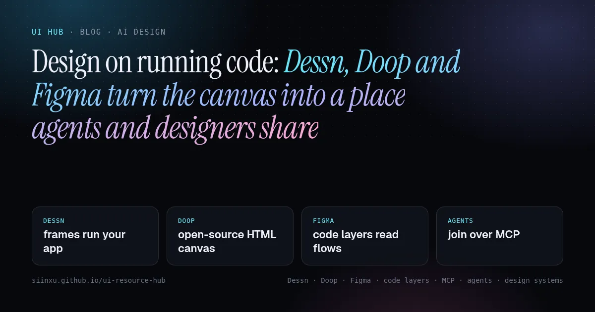
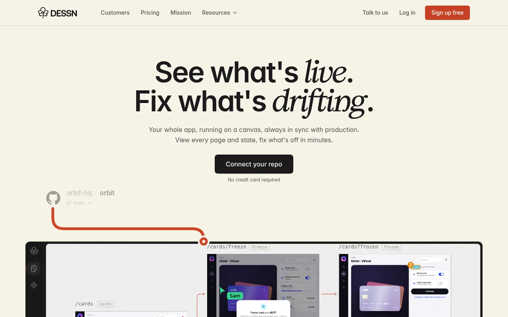
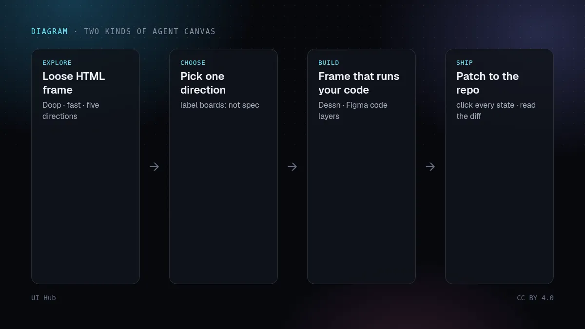
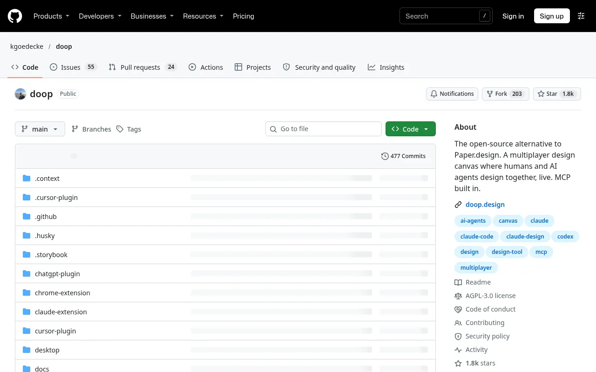
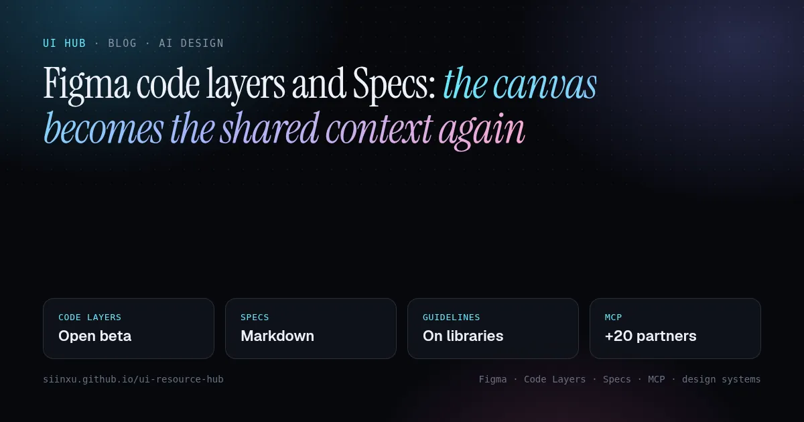
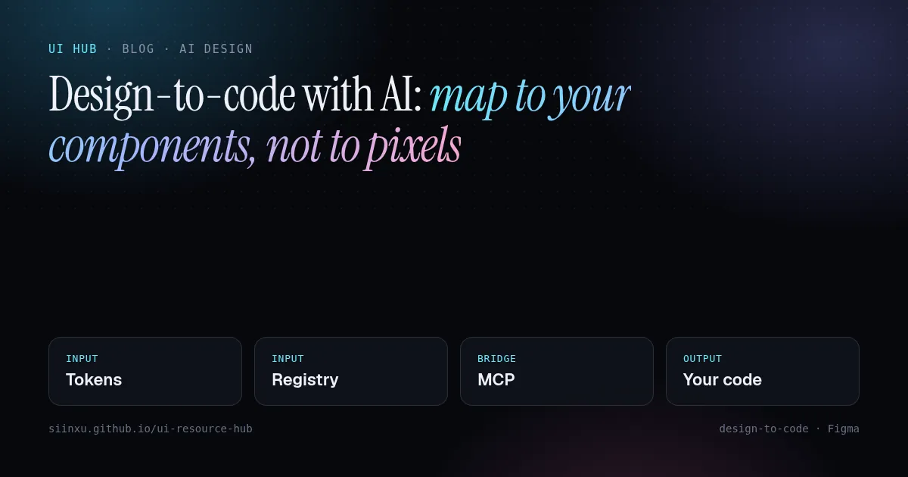
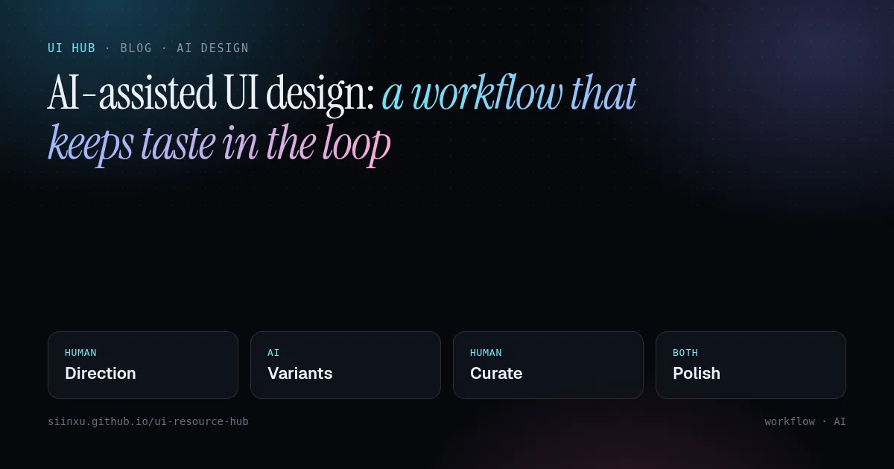

Design on running code: Dessn, Doop and Figma turn the canvas into a place agents and designers share動くコードの上でデザインする：Dessn、Doop、Figmaがキャンバスをデザイナーとエージェントの共有の場に変える실행 중인 코드 위에서 디자인하기: Dessn, Doop, Figma가 캔버스를 디자이너와 에이전트가 함께 쓰는 곳으로 바꾼다Reka bentuk di atas kod yang sedang berjalan: Dessn, Doop dan Figma menjadikan kanvas ruang kongsi pereka dan ejenThiết kế trên mã đang chạy: Dessn, Doop và Figma biến canvas thành nơi nhà thiết kế và agent cùng làm việcConcevoir sur du code qui tourne : Dessn, Doop et Figma font du canevas un espace partagé entre designers et agentsDiseñar sobre código en ejecución: Dessn, Doop y Figma convierten el lienzo en un espacio compartido por diseñadores y agentesAuf laufendem Code gestalten: Dessn, Doop und Figma machen die Arbeitsfläche zum gemeinsamen Ort für Designer und Agents
On 4 November Dessn launched a canvas that runs your real app from your repo, the open-source Doop canvas trended on GitHub, and a day earlier Figma’s code layers started reading prototype connections. Two kinds of agent canvas are emerging: frames that are your app, and frames that are loose HTML. How they differ, what to check before connecting a repo, and a checklist for designing on code.11月4日、リポジトリから実際のアプリを動かすキャンバスDessnが公開され、オープンソースのキャンバスDoopがGitHubのトレンドに入り、その前日にはFigmaのコードレイヤーがプロトタイプの接続を読むようになった。エージェント向けキャンバスは「フレーム＝自分のアプリ」と「フレーム＝単独のHTML」の2種類に分かれつつある。違い、リポジトリ接続前の確認点、コード上でデザインするためのチェックリスト。11월 4일 저장소에서 실제 앱을 그대로 실행하는 캔버스 Dessn이 출시됐고, 오픈소스 캔버스 Doop이 GitHub 트렌딩에 올랐으며, 하루 전 Figma 코드 레이어는 프로토타입 연결을 읽기 시작했다. 에이전트용 캔버스는 ‘프레임이 곧 내 앱’인 것과 ‘프레임이 독립 HTML’인 것으로 나뉘고 있다. 차이점, 저장소 연결 전 확인할 점, 코드 위에서 디자인하기 위한 체크리스트.Pada 4 November Dessn melancarkan kanvas yang menjalankan aplikasi sebenar daripada repo anda, kanvas sumber terbuka Doop menjadi trending di GitHub, dan sehari sebelumnya lapisan kod Figma mula membaca sambungan prototaip. Dua jenis kanvas ejen sedang muncul: bingkai yang ialah aplikasi anda, dan bingkai HTML bebas. Perbezaannya, perkara untuk disemak sebelum menyambung repo, dan senarai semak.Ngày 4/11, Dessn ra mắt canvas chạy ứng dụng thật từ repo của bạn, canvas mã nguồn mở Doop lên xu hướng GitHub, và một ngày trước đó code layer của Figma bắt đầu đọc các liên kết prototype. Đang hình thành hai loại canvas cho agent: frame chính là ứng dụng của bạn, và frame là HTML rời. Khác biệt, những gì cần kiểm tra trước khi kết nối repo, và một checklist.Le 4 novembre, Dessn a lancé un canevas qui exécute votre vraie application depuis votre dépôt, le canevas open source Doop est apparu dans les tendances GitHub, et la veille les calques de code de Figma ont commencé à lire les connexions de prototype. Deux types de canevas pour agents émergent : des cadres qui sont votre application, et des cadres en HTML libre. Différences, vérifications avant de connecter un dépôt, et une checklist.El 4 de noviembre Dessn lanzó un lienzo que ejecuta tu aplicación real desde tu repositorio, el lienzo de código abierto Doop fue tendencia en GitHub y un día antes las capas de código de Figma empezaron a leer las conexiones del prototipo. Surgen dos tipos de lienzo para agentes: marcos que son tu aplicación y marcos de HTML suelto. En qué se diferencian, qué revisar antes de conectar un repositorio y una checklist.Am 4. November startete Dessn eine Arbeitsfläche, die Ihre echte App aus dem Repository ausführt, die Open-Source-Fläche Doop landete in den GitHub-Trends, und einen Tag zuvor begannen Figmas Code-Ebenen, Prototyp-Verbindungen zu lesen. Zwei Arten von Agent-Flächen entstehen: Frames, die Ihre App sind, und Frames aus losem HTML. Unterschiede, Prüfpunkte vor dem Verbinden eines Repos und eine Checkliste.

本文は英語で表示しています。
본문은 영어로 표시됩니다.
Kandungan dipaparkan dalam bahasa Inggeris.
Nội dung hiển thị bằng tiếng Anh.
Le corps de l’article est en anglais.
El cuerpo del artículo está en inglés.
Der Beitragstext ist auf Englisch.
Three releases in two days point the same way. On 4 November Dessn launched on Product Hunt with a simple pitch: connect GitHub, GitLab or Bitbucket, and it renders your frontend one to one on a design canvas, with the backend mocked, so the team and their agents look at what is actually live. The same day the open-source Doop, a multiplayer canvas where people and AI agents edit HTML frames together, showed up on GitHub’s trending list. And on 3 November Figma said that when you turn design frames into a code layer, its agent now reads the prototype connections and interactions between them; it also made repository cloning the default for new GitHub connections.

None of these is “AI generates a mockup”. They are about where the design and the agent meet: a shared canvas that an agent can write to over MCP (the Model Context Protocol that lets coding agents call tools) and that a person can click through.
Two kinds of agent canvas
- Frames that are your app. In Dessn, a frame holds the app’s codebase. Its agent guidance says a new page, state or variation is a copy of the app’s frame whose code the agent writes, that components should be reused or modified rather than recreated, and that the change goes home as a patch, commits or a bundle. Dessn also exposes the components and tokens the app really uses, with file and line. Figma’s code layers sit nearby: you can import a GitHub repo or convert frames, and now the prototype wiring travels with them.
- Frames that are loose HTML. Doop frames render HTML in sandboxed iframes. Agents connect over MCP with OAuth and work as you; its README lists 42 tools, including streaming a design into a frame section by section and taking a screenshot so the agent can review its own work. A built-in agent runs on GPT, Claude, Gemini, DeepSeek, Kimi or Qwen models. It is AGPL-3.0, self-hostable with an embedded Postgres, and calls itself an open-source alternative to Paper.

Dessn’s own docs draw the same line: real-app frames are what it is for, and HTML frames are for notes, annotations and visuals that are not a page of the app, such as an OG image or a moodboard.
Our take
The difference matters more than the brand names. An HTML frame is a fast sketch: great for exploring five directions, but every one of them still has to be translated into your components, and that translation is where design systems drift. A frame that runs your code skips the translation, because the variation is already a diff against your app. The cost moves elsewhere: you are now connecting a repository, deciding what data the mocked backend shows, and reviewing a code change rather than a picture.
That shift also changes what a designer reviews. On a code canvas the useful questions are no longer “is this pixel right” but “did the agent reuse our Button, did it handle the empty and error states, and does the diff touch anything it should not”. Figma reading prototype connections is a small version of the same idea: the flow you wired becomes input for the code, so wiring the flow carefully is now part of the spec.
We would not pick one canvas for everything. Use an HTML canvas to explore directions quickly and cheaply, then move the winner onto a frame that runs your code before anyone calls it done.
Checklist: designing on running code
- Decide what the frame is. Your app (code-backed) for anything that will ship; loose HTML for exploration, moodboards and one-off visuals. Label exploration boards so nobody treats them as spec.
- Check repository access first. Know which repos are connected, whether the tool only reads or also clones, and who can see them. In Figma, new GitHub connections now clone by default; admins can turn it off per repository.
- Seed realistic mock data. If the backend is mocked, make sure the canvas shows real-looking names, long strings, empty lists and error responses, not just the happy path.
- Tell agents to reuse, not recreate. Put “reuse or modify existing components; never rebuild one” in your agent rules, and run your design-system lint on every diff.
- Wire the flow before you generate. In Figma, connect the prototype frames and interactions first, since the code layer agent now reads them.
- Review by clicking, then by diff. Click through every state on the canvas, then read the patch: changed files, new dependencies, hard-coded colours.
- Keep one source of truth. After the change merges, refresh the canvas from the repo so the next round starts from production, not from yesterday’s frame.
- Read the licence if you self-host. Doop is AGPL-3.0: if you modify it and let others use it over a network, you must offer them your modified source.
# Brief for an agent working on a code-backed canvas
Goal: add an empty state + error state to the Invoices page
Frame: copy the live Invoices frame; do not start from blank HTML
Reuse: EmptyState, Alert, Button from src/components (no new components)
Tokens: colours and spacing from tokens.css only, no hex values
Data: mock 0 invoices, 1 invoice, 240 invoices, and a 500 error
States: loading · empty · error · long names · 375px width
Deliver: playable frame + patch; list every changed file
Never: touch API code, add dependencies, or change other pages
How UI Hub helps
For the Figma side, read Figma code layers and Specs. Pointing at a running app instead of describing it is covered in annotate, don’t describe. To make agents reuse your components, use lint agents onto your design system and keep tokens readable with design tokens for agents. GitHub Replica shows a related approach where reviewed design-system guidance drives prototypes.
Three releases in two days point the same way. On 4 November Dessn launched on Product Hunt with a simple pitch: connect GitHub, GitLab or Bitbucket, and it renders your frontend one to one on a design canvas, with the backend mocked, so the team and their agents look at what is actually live. The same day the open-source Doop, a multiplayer canvas where people and AI agents edit HTML frames together, showed up on GitHub’s trending list. And on 3 November Figma said that when you turn design frames into a code layer, its agent now reads the prototype connections and interactions between them; it also made repository cloning the default for new GitHub connections.
None of these is “AI generates a mockup”. They are about where the design and the agent meet: a shared canvas that an agent can write to over MCP (the Model Context Protocol that lets coding agents call tools) and that a person can click through.
Two kinds of agent canvas
- Frames that are your app. In Dessn, a frame holds the app’s codebase. Its agent guidance says a new page, state or variation is a copy of the app’s frame whose code the agent writes, that components should be reused or modified rather than recreated, and that the change goes home as a patch, commits or a bundle. Dessn also exposes the components and tokens the app really uses, with file and line. Figma’s code layers sit nearby: you can import a GitHub repo or convert frames, and now the prototype wiring travels with them.
- Frames that are loose HTML. Doop frames render HTML in sandboxed iframes. Agents connect over MCP with OAuth and work as you; its README lists 42 tools, including streaming a design into a frame section by section and taking a screenshot so the agent can review its own work. A built-in agent runs on GPT, Claude, Gemini, DeepSeek, Kimi or Qwen models. It is AGPL-3.0, self-hostable with an embedded Postgres, and calls itself an open-source alternative to Paper.
Dessn’s own docs draw the same line: real-app frames are what it is for, and HTML frames are for notes, annotations and visuals that are not a page of the app, such as an OG image or a moodboard.
Our take
The difference matters more than the brand names. An HTML frame is a fast sketch: great for exploring five directions, but every one of them still has to be translated into your components, and that translation is where design systems drift. A frame that runs your code skips the translation, because the variation is already a diff against your app. The cost moves elsewhere: you are now connecting a repository, deciding what data the mocked backend shows, and reviewing a code change rather than a picture.
That shift also changes what a designer reviews. On a code canvas the useful questions are no longer “is this pixel right” but “did the agent reuse our Button, did it handle the empty and error states, and does the diff touch anything it should not”. Figma reading prototype connections is a small version of the same idea: the flow you wired becomes input for the code, so wiring the flow carefully is now part of the spec.
We would not pick one canvas for everything. Use an HTML canvas to explore directions quickly and cheaply, then move the winner onto a frame that runs your code before anyone calls it done.
Checklist: designing on running code
- Decide what the frame is. Your app (code-backed) for anything that will ship; loose HTML for exploration, moodboards and one-off visuals. Label exploration boards so nobody treats them as spec.
- Check repository access first. Know which repos are connected, whether the tool only reads or also clones, and who can see them. In Figma, new GitHub connections now clone by default; admins can turn it off per repository.
- Seed realistic mock data. If the backend is mocked, make sure the canvas shows real-looking names, long strings, empty lists and error responses, not just the happy path.
- Tell agents to reuse, not recreate. Put “reuse or modify existing components; never rebuild one” in your agent rules, and run your design-system lint on every diff.
- Wire the flow before you generate. In Figma, connect the prototype frames and interactions first, since the code layer agent now reads them.
- Review by clicking, then by diff. Click through every state on the canvas, then read the patch: changed files, new dependencies, hard-coded colours.
- Keep one source of truth. After the change merges, refresh the canvas from the repo so the next round starts from production, not from yesterday’s frame.
- Read the licence if you self-host. Doop is AGPL-3.0: if you modify it and let others use it over a network, you must offer them your modified source.
# Brief for an agent working on a code-backed canvas
Goal: add an empty state + error state to the Invoices page
Frame: copy the live Invoices frame; do not start from blank HTML
Reuse: EmptyState, Alert, Button from src/components (no new components)
Tokens: colours and spacing from tokens.css only, no hex values
Data: mock 0 invoices, 1 invoice, 240 invoices, and a 500 error
States: loading · empty · error · long names · 375px width
Deliver: playable frame + patch; list every changed file
Never: touch API code, add dependencies, or change other pagesHow UI Hub helps
For the Figma side, read Figma code layers and Specs. Pointing at a running app instead of describing it is covered in annotate, don’t describe. To make agents reuse your components, use lint agents onto your design system and keep tokens readable with design tokens for agents. GitHub Replica shows a related approach where reviewed design-system guidance drives prototypes.
AI promptAIプロンプトAI 프롬프트Prompt AIPrompt cho AIPrompt IAPrompt de IAKI-Prompt
Paste this into Claude, Cursor, v0 or another assistant to apply this post to your own project. Replace the parts in angle brackets.Claude・Cursor・v0 などのAIアシスタントに貼り付けると、この記事の方法をあなたのプロジェクトに適用できます。山括弧の部分は自分の内容に置き換えてください。Claude, Cursor, v0 같은 AI 도우미에 붙여 넣으면 이 글의 방법을 내 프로젝트에 적용할 수 있습니다. 꺾쇠괄호 안은 내 내용으로 바꾸세요.Tampal ke Claude, Cursor, v0 atau pembantu lain untuk menggunakan kaedah artikel ini pada projek anda. Gantikan bahagian dalam kurungan sudut.Dán vào Claude, Cursor, v0 hoặc trợ lý khác để áp dụng bài này cho dự án của bạn. Thay phần trong dấu ngoặc nhọn bằng nội dung của bạn.Collez-le dans Claude, Cursor, v0 ou un autre assistant pour appliquer cet article à votre projet. Remplacez les parties entre chevrons.Pégalo en Claude, Cursor, v0 u otro asistente para aplicar este artículo a tu proyecto. Sustituye lo que está entre corchetes angulares.In Claude, Cursor, v0 oder einen anderen Assistenten einfügen, um diesen Beitrag auf dein Projekt anzuwenden. Teile in spitzen Klammern ersetzen.
You are a senior UI engineer. Apply the article “Design on running code: Dessn, Doop and Figma turn the canvas into a place agents and designers share” (https://ui.incidental.site/blog/design-on-running-code-dessn-doop-code-canvas/) to my project.
Key idea: On 4 November Dessn launched a canvas that runs your real app from your repo, the open-source Doop canvas trended on GitHub, and a day earlier Figma’s code layers started reading prototype connections. Two kinds of agent canvas are emerging: frames that are your app, and frames that are loose HTML. How they differ, what to check before connecting a repo, and a checklist for designing on code.
Steps:
1. Read the article and turn its advice into a numbered checklist of concrete, checkable rules.
2. Audit <my page / component / repo> against that checklist; mark each rule PASS or FAIL with file and line.
3. Fix the FAIL items in small batches, using my existing tokens and components. Do not invent APIs; follow the official docs the article links to.
4. Finish with a short list of open questions and anything you could not verify.あなたはシニアUIエンジニアです。記事「動くコードの上でデザインする：Dessn、Doop、Figmaがキャンバスをデザイナーとエージェントの共有の場に変える」（https://ui.incidental.site/blog/design-on-running-code-dessn-doop-code-canvas/）の方法を私のプロジェクトに適用してください。
要点：11月4日、リポジトリから実際のアプリを動かすキャンバスDessnが公開され、オープンソースのキャンバスDoopがGitHubのトレンドに入り、その前日にはFigmaのコードレイヤーがプロトタイプの接続を読むようになった。エージェント向けキャンバスは「フレーム＝自分のアプリ」と「フレーム＝単独のHTML」の2種類に分かれつつある。違い、リポジトリ接続前の確認点、コード上でデザインするためのチェックリスト。
手順：
1. 記事を読み、助言を具体的で確認可能な番号付きチェックリストにする。
2. そのチェックリストで <私のページ / コンポーネント / リポジトリ> を監査し、各項目を合格／不合格で示し、ファイルと行番号を書く。
3. 不合格の項目を、既存のトークンとコンポーネントを使って少しずつ修正する。APIを捏造せず、記事がリンクする公式ドキュメントに従う。
4. 最後に未解決の質問と検証できなかった点を挙げる。당신은 시니어 UI 엔지니어입니다. 글 “실행 중인 코드 위에서 디자인하기: Dessn, Doop, Figma가 캔버스를 디자이너와 에이전트가 함께 쓰는 곳으로 바꾼다”(https://ui.incidental.site/blog/design-on-running-code-dessn-doop-code-canvas/)의 방법을 내 프로젝트에 적용해 주세요.
핵심: 11월 4일 저장소에서 실제 앱을 그대로 실행하는 캔버스 Dessn이 출시됐고, 오픈소스 캔버스 Doop이 GitHub 트렌딩에 올랐으며, 하루 전 Figma 코드 레이어는 프로토타입 연결을 읽기 시작했다. 에이전트용 캔버스는 ‘프레임이 곧 내 앱’인 것과 ‘프레임이 독립 HTML’인 것으로 나뉘고 있다. 차이점, 저장소 연결 전 확인할 점, 코드 위에서 디자인하기 위한 체크리스트.
단계:
1. 글을 읽고 조언을 구체적이고 확인 가능한 번호 목록으로 정리한다.
2. 그 목록으로 <내 페이지 / 컴포넌트 / 저장소>를 점검하고, 항목마다 통과/실패와 파일·줄 번호를 적는다.
3. 실패 항목을 기존 토큰과 컴포넌트로 조금씩 고친다. API를 지어내지 말고 글에 링크된 공식 문서를 따른다.
4. 마지막으로 남은 질문과 확인하지 못한 내용을 정리한다.Anda jurutera UI kanan. Gunakan kaedah artikel “Reka bentuk di atas kod yang sedang berjalan: Dessn, Doop dan Figma menjadikan kanvas ruang kongsi pereka dan ejen” (https://ui.incidental.site/blog/design-on-running-code-dessn-doop-code-canvas/) pada projek saya.
Idea utama: Pada 4 November Dessn melancarkan kanvas yang menjalankan aplikasi sebenar daripada repo anda, kanvas sumber terbuka Doop menjadi trending di GitHub, dan sehari sebelumnya lapisan kod Figma mula membaca sambungan prototaip. Dua jenis kanvas ejen sedang muncul: bingkai yang ialah aplikasi anda, dan bingkai HTML bebas. Perbezaannya, perkara untuk disemak sebelum menyambung repo, dan senarai semak.
Langkah:
1. Baca artikel dan jadikan nasihatnya senarai semak bernombor yang konkrit dan boleh disemak.
2. Audit <halaman / komponen / repo saya> dengan senarai itu; tandakan setiap peraturan LULUS atau GAGAL dengan fail dan baris.
3. Baiki item GAGAL sedikit demi sedikit menggunakan token dan komponen sedia ada. Jangan reka API; ikut dokumen rasmi yang dipautkan artikel.
4. Akhiri dengan soalan terbuka dan perkara yang tidak dapat disahkan.Bạn là kỹ sư UI cấp cao. Hãy áp dụng bài viết “Thiết kế trên mã đang chạy: Dessn, Doop và Figma biến canvas thành nơi nhà thiết kế và agent cùng làm việc” (https://ui.incidental.site/blog/design-on-running-code-dessn-doop-code-canvas/) cho dự án của tôi.
Ý chính: Ngày 4/11, Dessn ra mắt canvas chạy ứng dụng thật từ repo của bạn, canvas mã nguồn mở Doop lên xu hướng GitHub, và một ngày trước đó code layer của Figma bắt đầu đọc các liên kết prototype. Đang hình thành hai loại canvas cho agent: frame chính là ứng dụng của bạn, và frame là HTML rời. Khác biệt, những gì cần kiểm tra trước khi kết nối repo, và một checklist.
Các bước:
1. Đọc bài và biến lời khuyên thành danh sách kiểm tra đánh số, cụ thể, kiểm chứng được.
2. Rà soát <trang / component / repo của tôi> theo danh sách đó; ghi ĐẠT hoặc KHÔNG ĐẠT kèm tệp và dòng.
3. Sửa các mục KHÔNG ĐẠT theo từng đợt nhỏ, dùng token và component sẵn có. Không bịa API; làm theo tài liệu chính thức mà bài viết dẫn tới.
4. Kết thúc bằng các câu hỏi còn mở và những điểm chưa xác minh được.Tu es ingénieur UI senior. Applique l’article « Concevoir sur du code qui tourne : Dessn, Doop et Figma font du canevas un espace partagé entre designers et agents » (https://ui.incidental.site/blog/design-on-running-code-dessn-doop-code-canvas/) à mon projet.
Idée clé : Le 4 novembre, Dessn a lancé un canevas qui exécute votre vraie application depuis votre dépôt, le canevas open source Doop est apparu dans les tendances GitHub, et la veille les calques de code de Figma ont commencé à lire les connexions de prototype. Deux types de canevas pour agents émergent : des cadres qui sont votre application, et des cadres en HTML libre. Différences, vérifications avant de connecter un dépôt, et une checklist.
Étapes :
1. Lis l’article et transforme ses conseils en une liste numérotée de règles concrètes et vérifiables.
2. Audite <ma page / mon composant / mon dépôt> avec cette liste ; indique OK ou KO pour chaque règle, avec fichier et ligne.
3. Corrige les points KO par petits lots, avec mes tokens et composants existants. N’invente pas d’API ; suis la documentation officielle citée par l’article.
4. Termine par les questions ouvertes et ce que tu n’as pas pu vérifier.Eres un ingeniero de UI sénior. Aplica el artículo “Diseñar sobre código en ejecución: Dessn, Doop y Figma convierten el lienzo en un espacio compartido por diseñadores y agentes” (https://ui.incidental.site/blog/design-on-running-code-dessn-doop-code-canvas/) a mi proyecto.
Idea clave: El 4 de noviembre Dessn lanzó un lienzo que ejecuta tu aplicación real desde tu repositorio, el lienzo de código abierto Doop fue tendencia en GitHub y un día antes las capas de código de Figma empezaron a leer las conexiones del prototipo. Surgen dos tipos de lienzo para agentes: marcos que son tu aplicación y marcos de HTML suelto. En qué se diferencian, qué revisar antes de conectar un repositorio y una checklist.
Pasos:
1. Lee el artículo y convierte sus consejos en una lista numerada de reglas concretas y comprobables.
2. Audita <mi página / componente / repositorio> con esa lista; marca cada regla como CUMPLE o NO CUMPLE con archivo y línea.
3. Corrige los puntos que no cumplen en lotes pequeños, usando mis tokens y componentes actuales. No inventes APIs; sigue la documentación oficial que enlaza el artículo.
4. Termina con las preguntas abiertas y lo que no pudiste verificar.Du bist Senior-UI-Engineer. Wende den Artikel „Auf laufendem Code gestalten: Dessn, Doop und Figma machen die Arbeitsfläche zum gemeinsamen Ort für Designer und Agents“ (https://ui.incidental.site/blog/design-on-running-code-dessn-doop-code-canvas/) auf mein Projekt an.
Kernidee: Am 4. November startete Dessn eine Arbeitsfläche, die Ihre echte App aus dem Repository ausführt, die Open-Source-Fläche Doop landete in den GitHub-Trends, und einen Tag zuvor begannen Figmas Code-Ebenen, Prototyp-Verbindungen zu lesen. Zwei Arten von Agent-Flächen entstehen: Frames, die Ihre App sind, und Frames aus losem HTML. Unterschiede, Prüfpunkte vor dem Verbinden eines Repos und eine Checkliste.
Schritte:
1. Lies den Artikel und mach aus den Empfehlungen eine nummerierte Liste konkreter, prüfbarer Regeln.
2. Prüfe <meine Seite / Komponente / mein Repo> anhand dieser Liste; markiere jede Regel mit OK oder FEHLT, mit Datei und Zeile.
3. Behebe die fehlenden Punkte in kleinen Schritten mit meinen vorhandenen Tokens und Komponenten. Erfinde keine APIs; folge der offiziellen Doku, die der Artikel verlinkt.
4. Schließe mit offenen Fragen und dem, was du nicht prüfen konntest.References参考文献참고 자료RujukanNguồn tham khảoRéférencesReferenciasQuellen
- Dessn: the design canvas that runs your real code (Product Hunt launch, 4 Nov 2026) — Hunted.space
- Dessn — Dessn
- We built what you wished Figma could be (launch video) — Dessn, via posts.design
- kgoedecke/doop — kgoedecke, GitHub
- Get started — Doop
- The design MCP for Claude Code — Doop
- doop open-source canvas lets AI agents design live with humans — Marcello Babbili, Not a Tech Guy
- Release notes: prototype connections as context for code layers; cloning by default (3 Nov 2026) — Figma
- What’s new from Config India 2026 (code layers open beta) — Figma Learn
- Paper — Paper
- Authorization — Model Context Protocol specification
- GNU Affero General Public License v3.0 — choosealicense.com
Related posts関連記事관련 글Artikel berkaitanBài liên quanArticles liésArtículos relacionadosÄhnliche Beiträge

Figma code layers and Specs: the canvas becomes the shared context againFigmaのコードレイヤーと Specs：キャンバスが再び共有コンテキストにFigma 코드 레이어와 Specs: 캔버스가 다시 공유 컨텍스트가 되다Lapisan kod dan Specs Figma: kanvas kembali menjadi konteks bersamaCode layers và Specs của Figma: canvas lại là ngữ cảnh chungCode layers et Specs dans Figma : le canevas redevient le contexte partagéCode layers y Specs en Figma: el lienzo vuelve a ser el contexto compartidoFigma Code Layers und Specs: Die Canvas wird wieder zum gemeinsamen Kontext
At Config India (15 Oct 2026) Figma moved code layers into open beta, launched Specs as a Markdown home on the canvas, and let libraries carry guidelines and code sources. The lesson for UI builders: agents are short of constraint files, not generators.Config India（2026-10-15）でFigmaはコードレイヤーをオープンベータにし、Markdownをキャンバスに置くSpecsを公開、ライブラリにガイドラインとコードソースを持たせた。UI制作者への教訓：エージェントに足りないのは生成器ではなく制約ファイルだ。Config India(2026-10-15)에서 Figma는 코드 레이어를 오픈 베타로 전환하고, Markdown을 캔버스에 두는 Specs를 출시했으며, 라이브러리에 가이드라인과 코드 소스를 붙였다. UI 제작자에게 주는 교훈: 에이전트에게 부족한 것은 생성기가 아니라 제약 파일이다.Di Config India (15 Okt 2026) Figma membawa lapisan kod ke beta terbuka, melancarkan Specs sebagai rumah Markdown di kanvas, dan membenarkan pustaka membawa garis panduan serta sumber kod. Pengajaran: ejen kekurangan fail kekangan, bukan penjana.Tại Config India (15/10/2026), Figma đưa code layers vào beta mở, ra mắt Specs làm nơi đặt Markdown trên canvas, và cho thư viện mang theo guidelines cùng code sources. Bài học: agent thiếu file ràng buộc, không thiếu trình sinh.À Config India (15 oct. 2026), Figma passe les code layers en bêta ouverte, lance Specs pour le Markdown sur le canevas et laisse les bibliothèques porter guidelines et sources de code. Leçon : les agents manquent de fichiers de contraintes, pas de générateurs.En Config India (15 oct 2026) Figma llevó los code layers a beta abierta, lanzó Specs como hogar del Markdown en el lienzo y dejó que las bibliotecas lleven guidelines y fuentes de código. Lección: a los agentes les faltan archivos de restricciones, no generadores.Auf der Config India (15. Okt. 2026) brachte Figma Code Layers in die offene Beta, startete Specs als Markdown-Ort auf der Canvas und ließ Bibliotheken Guidelines und Code-Quellen tragen. Die Lehre: Agenten fehlen Constraint-Dateien, nicht Generatoren.

Design-to-code with AI: map to your components, not to pixelsAIでデザインからコードへ：ピクセルではなくコンポーネントに対応付けるAI로 디자인→코드: 픽셀이 아니라 컴포넌트에 매핑하라Reka bentuk ke kod dengan AI: petakan ke komponen, bukan pikselTừ thiết kế sang code bằng AI: ánh xạ vào component, không phải pixelDu design au code avec l'IA : mapper vers vos composants, pas des pixelsDe diseño a código con IA: mapea a tus componentes, no a píxelesDesign-to-Code mit KI: auf Komponenten mappen, nicht auf Pixel
Pixel-perfect export creates throwaway code. Give the agent your component registry and tokens via MCP so output reuses what you already ship.ピクセル完全な書き出しは使い捨てコードになる。MCPでレジストリとトークンを渡そう。픽셀 퍼펙트 내보내기는 일회용 코드다. MCP로 레지스트리와 토큰을 넘겨라.Eksport piksel sempurna menghasilkan kod pakai buang. Beri registri komponen dan token melalui MCP.Xuất pixel-perfect tạo code dùng một lần. Đưa registry và token qua MCP.L'export au pixel produit du code jetable. Donnez registre et tokens via MCP.Exportar al píxel crea código desechable. Pasa registro y tokens vía MCP.Pixelgenauer Export erzeugt Wegwerfcode. Registry und Tokens per MCP übergeben.

AI-assisted UI design: a workflow that keeps taste in the loopAI支援UIデザイン：センスを手放さないワークフローAI 보조 UI 디자인: 취향을 잃지 않는 워크플로Reka bentuk UI berbantu AI: aliran kerja yang mengekalkan cita rasaThiết kế UI có AI hỗ trợ: quy trình giữ được gu thẩm mỹDesign d'UI assisté par l'IA : un flux qui garde le goût dans la boucleDiseño de UI asistido por IA: un flujo que mantiene el criterioKI-gestütztes UI-Design: ein Workflow, der Geschmack im Spiel hält
Generators are fast but average. Split the job: humans set direction and constraints, AI explores variants, humans curate and polish.生成ツールは速いが平均的。方向と制約は人、バリエーションはAI、選別と仕上げは人。생성기는 빠르지만 평범하다. 방향과 제약은 사람, 변형은 AI, 선별과 다듬기는 사람.Penjana pantas tetapi biasa. Manusia tetapkan hala, AI teroka variasi, manusia pilih dan gilap.Công cụ sinh nhanh nhưng tầm thường. Người định hướng, AI khám phá biến thể, người chọn lọc và hoàn thiện.Rapides mais moyens : l'humain fixe la direction, l'IA explore, l'humain sélectionne et peaufine.Rápidos pero promedio: el humano fija la dirección, la IA explora, el humano elige y pule.Schnell, aber durchschnittlich: Mensch gibt Richtung vor, KI exploriert, Mensch kuratiert und poliert.